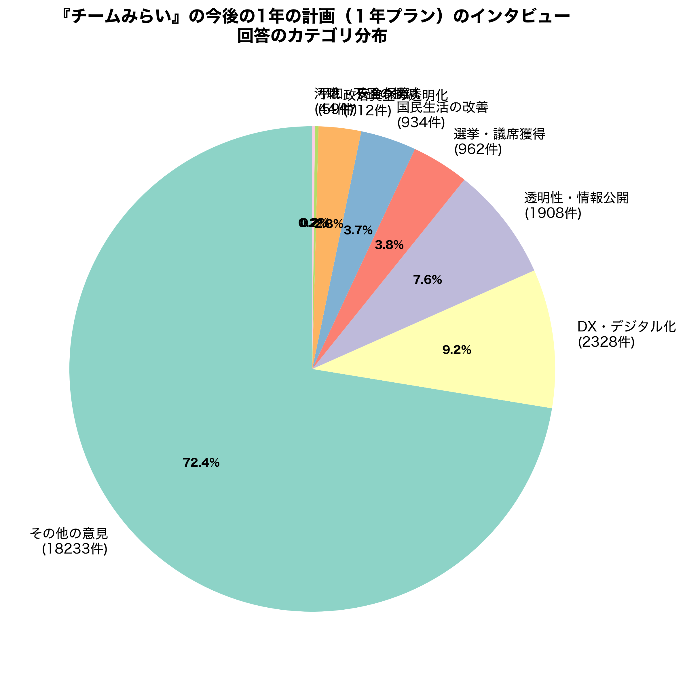
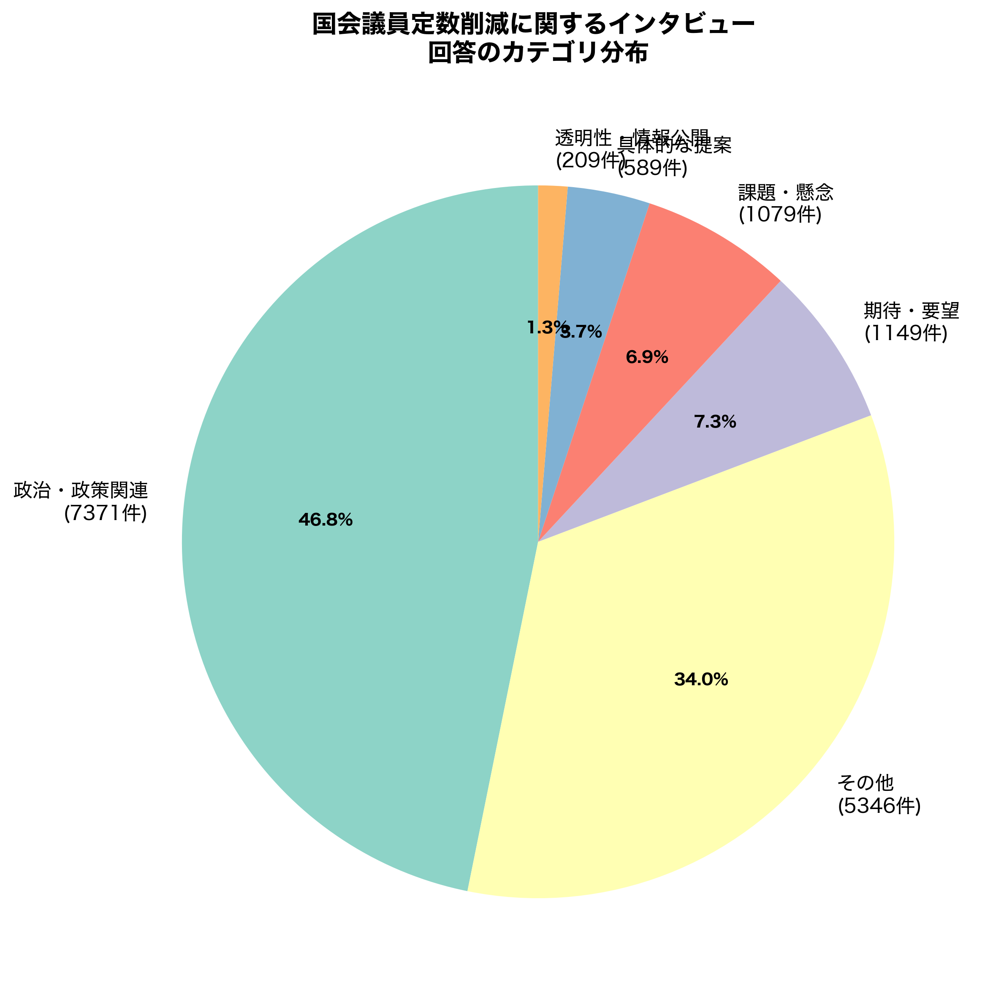
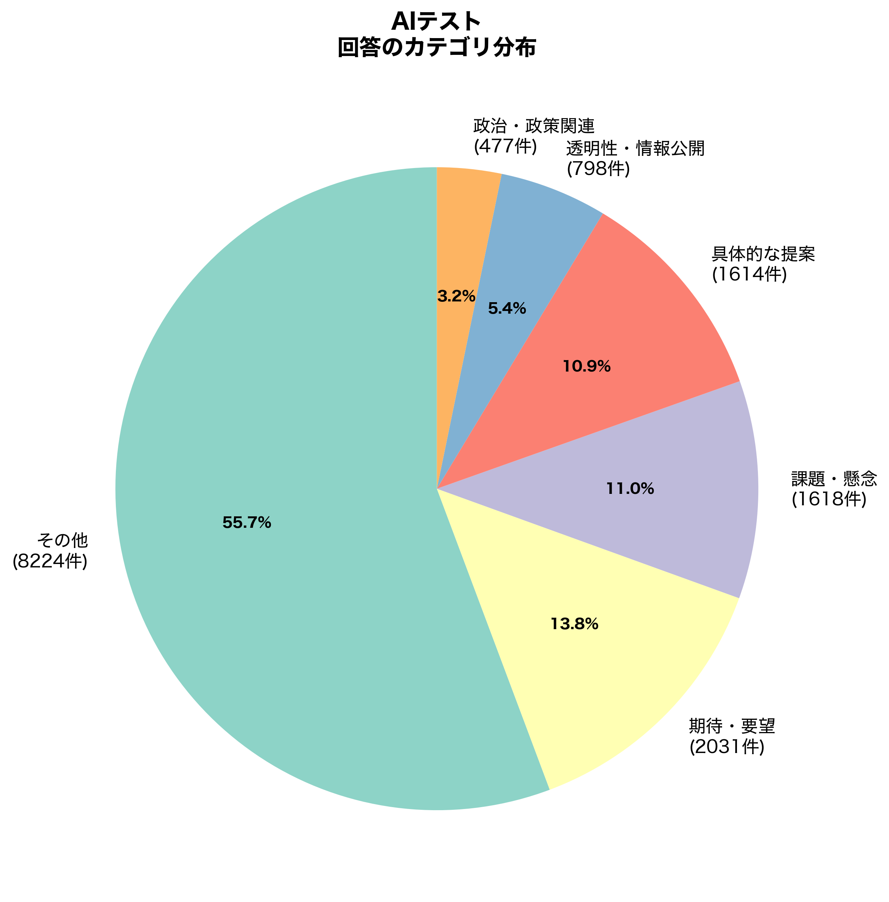
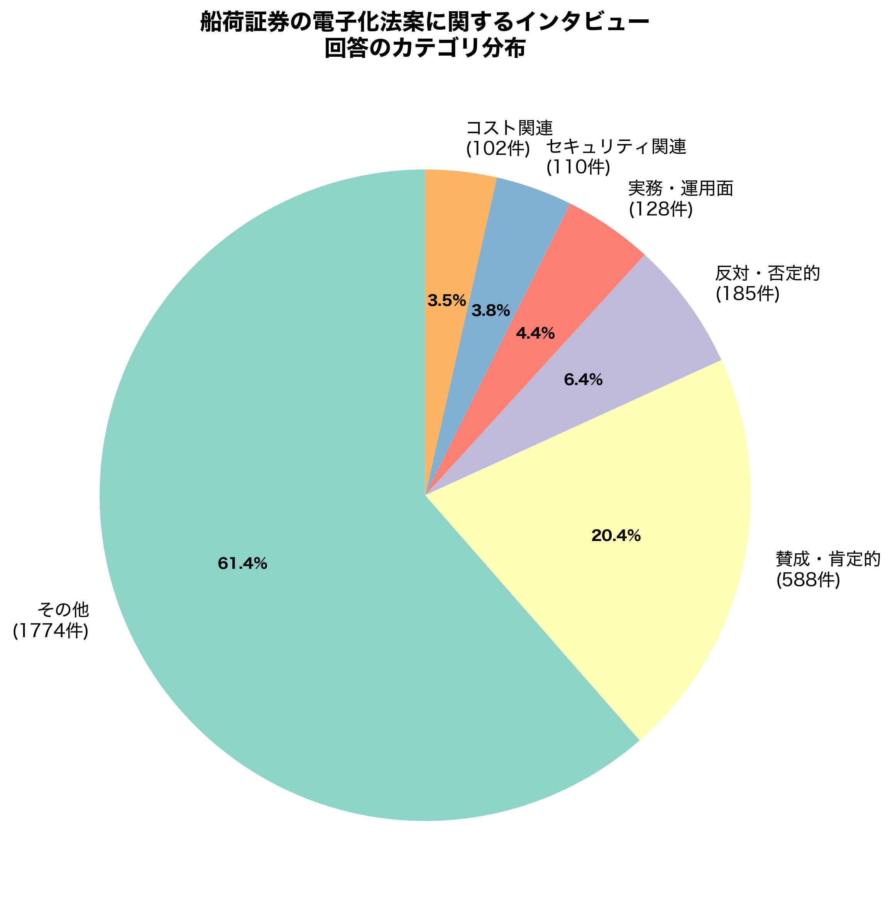
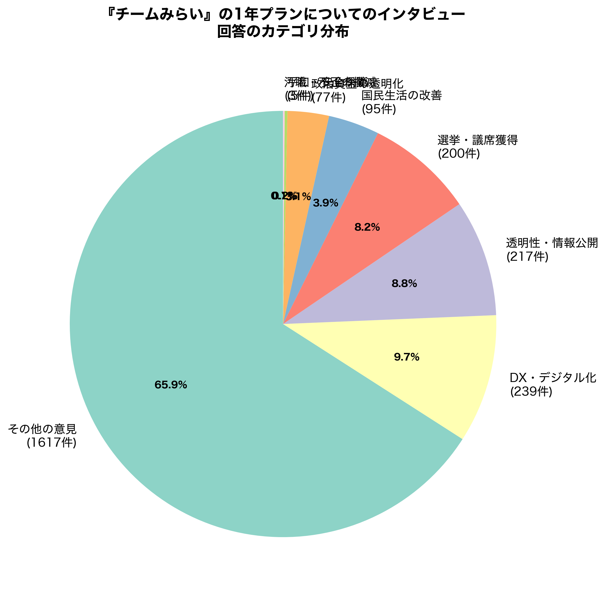
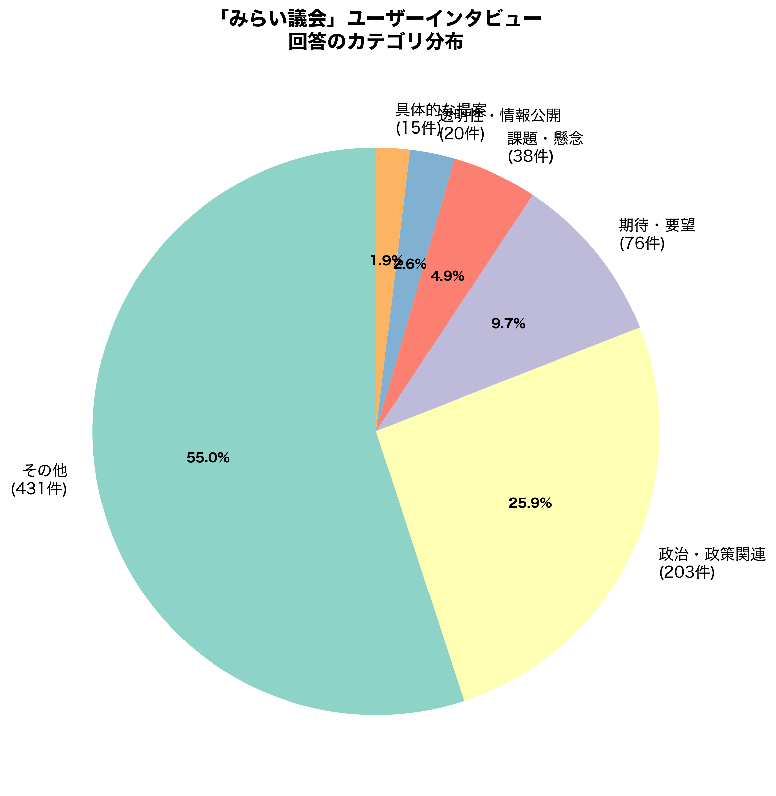
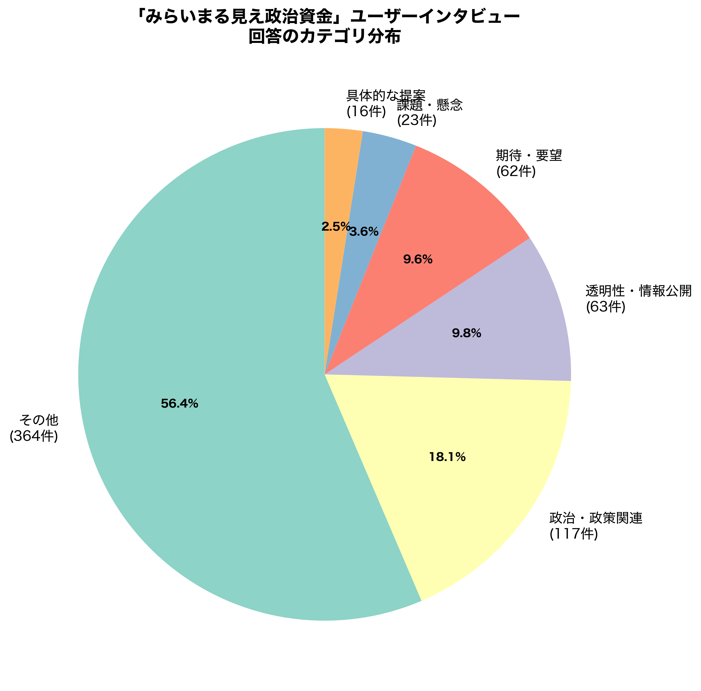
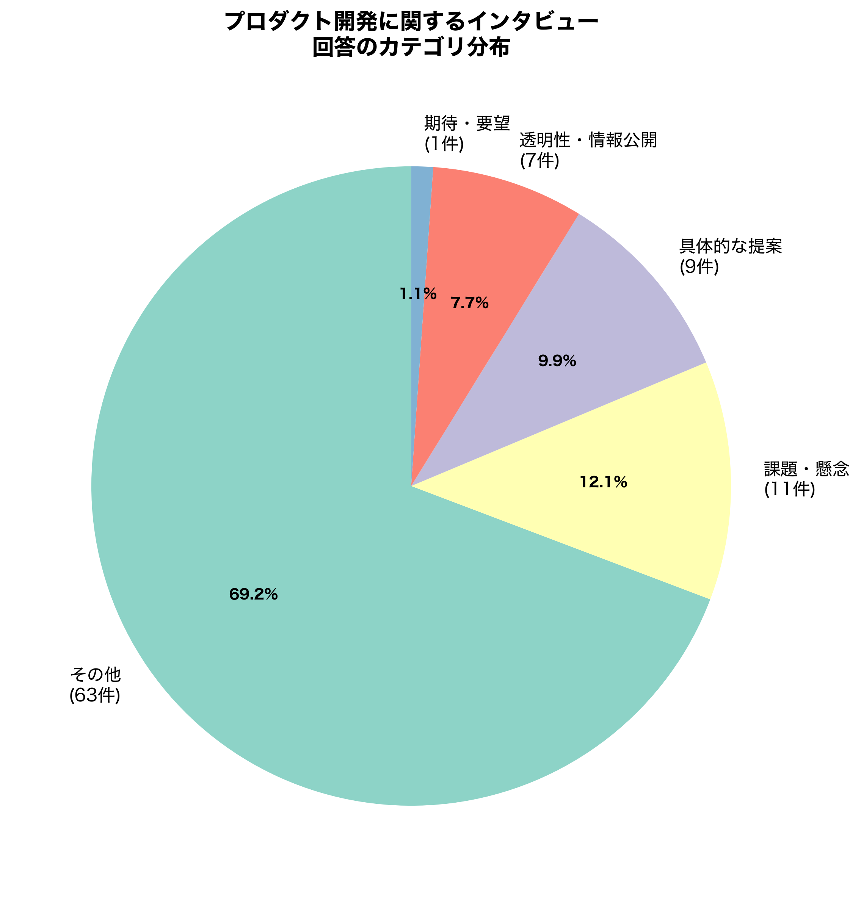
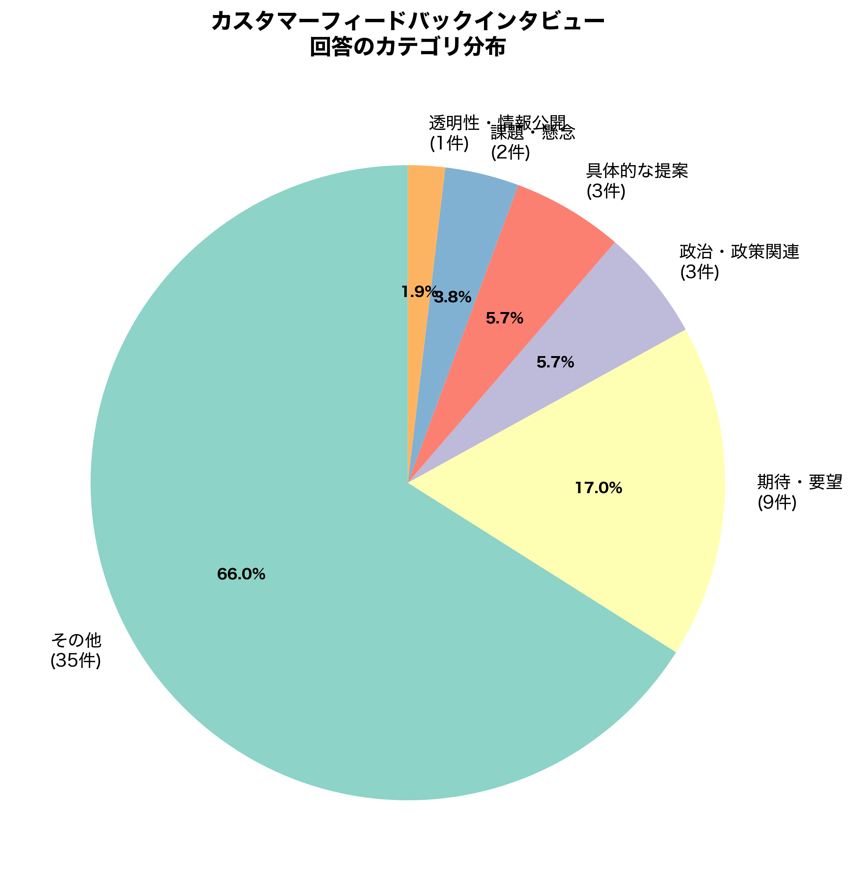
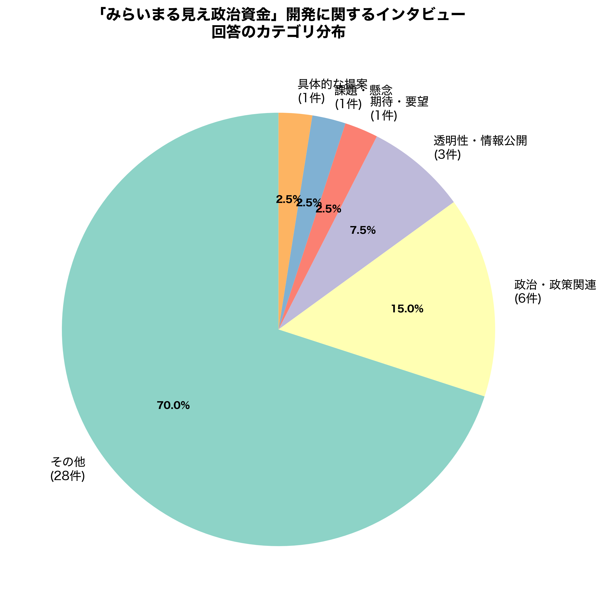

📈 分析概要
このレポートは、各種アンケートの自由記述回答をキーワードベースで自動カテゴリ化し、その分布を可視化したものです。
🎯 カテゴリ化の方針
基本的なアプローチ
各アンケートの性質に応じて、最も重要だと思われる視点でキーワードベースのカテゴリ化を実施しました。
1. チームみらい関連アンケート (plan2026, plan2026-public)
対象: チームみらいの1年プランに関する意見・提案
カテゴリ:
- 選挙・議席獲得 - 議席、選挙、候補などのキーワード
- DX・デジタル化 - デジタル、システム、IT、オンラインなど
- 透明性・情報公開 - 透明、公開、見える化、可視化など
- 政治資金の透明化 - 政治資金、献金、お金、資金など
- 汚職・不正の撲滅 - 汚職、不正、腐敗、癒着など
- 国民生活の改善 - 国民、庶民、市民、生活、暮らしなど
- 平和・安全保障 - 平和、戦争、防衛、安全保障など
- その他の意見 - 上記に該当しない意見
2. 船荷証券の電子化法案 (bill-of-lading)
対象: 国際貿易における船荷証券の電子化についての意見
カテゴリ:
- 賛成・肯定的 - 賛成、良い、メリット、効率など
- 反対・否定的 - 反対、懸念、心配、リスクなど
- セキュリティ関連 - セキュリティ、安全、保護など
- コスト関連 - コスト、費用、経費など
- 実務・運用面 - 実務、実装、運用、導入など
- その他 - 上記に該当しない意見
3. 定数削減議論 (teisuu)
対象: 国会議員の定数削減に関する意見
カテゴリ:
- 政治・政策関連 - 議員、国会、政治など
- 期待・要望 - 賛成、削減すべきなど
- 課題・懸念 - 反対、懸念など
- その他 - 一般的な意見
4. その他のアンケート
まる見え政治資金、みらい議会、AIプランなど:
- 政治・政策関連 - 政治、政策、議員などのキーワード
- 透明性・情報公開 - 透明性、情報公開、DXなど
- 期待・要望 - ポジティブな意見や期待
- 課題・懸念 - 課題や懸念事項
- 具体的な提案 - 実装や改善の具体提案
- その他 - 分類外の意見
注意事項
- カテゴリ化は自動化されており、キーワードベースで判定しています
- 一つの回答が複数のキーワードを含む場合、最初にマッチしたカテゴリに分類されます
- 「その他」カテゴリには、短い回答や特定のキーワードが含まれない回答が含まれます
- テスト回答や意味のない短文（「test」「あああ」など）は事前に除外されています
📊 カテゴリ別パイチャート一覧
各画像をクリックすると拡大表示されます。
『チームみらい』1年プラン（公開版）

最も多く寄せられたアンケート。DX推進、透明性向上、選挙戦略などに関する具体的な期待が集まっています。
国会議員定数削減議論

政治・政策に関する意見が最多。賛成・反対の両論が活発に議論されています。
AIプラン（テスト）

AI活用に関する期待、課題、具体的な提案が多数寄せられています。
船荷証券の電子化法案

国際貿易のデジタル化について、賛成意見が多い一方、セキュリティやコストへの懸念も見られます。
『チームみらい』1年プラン

DX推進、透明性、選挙戦略など多角的な意見が集まっています。
みらい議会インタビュー

政治・政策関連の意見が半数以上。期待や具体的な改善提案も多数寄せられています。
まる見え政治資金（ユーザーフィードバック）

政治資金の可視化ツールに対するユーザーからのフィードバック。
プロダクトリサーチ

プロダクト開発における課題や改善提案が中心。
カスタマーフィードバック

AIインタビューシステムに対するユーザー体験のフィードバック。
まる見え政治資金（開発者インタビュー）

開発者の視点からの意見や技術的な課題について。
🔧 分析手法・技術情報
使用技術
- プログラミング言語: Python 3.10
- データ処理: JSON形式のデータベースバックアップファイル
- 可視化: Matplotlib（日本語フォント: Hiragino Sans）
- カテゴリ化: キーワードベースのルールエンジン
データ処理フロー
- JSONデータからセッション情報とメッセージを抽出
- ユーザー回答（role: "user"）のみを抽出
- テスト回答や意味のない短文を除外
- アンケートの種類（slug）別に回答を分類
- 各アンケートに適したカテゴリ化ルールを適用
- カテゴリ別の回答数を集計
- パイチャートを生成（300dpi、高解像度）
分析スクリプト
分析に使用したPythonスクリプトは同じフォルダ内の create_pie_charts.py にあります。
実行方法:
conda activate mirai_db_analysis_py3.10
python create_pie_charts.py
💡 主要な発見
1. チームみらい関連
最も多くの回答が集まったのは「チームみらい1年プラン」関連のアンケート（合計27,633回答）。DX推進と透明性向上への期待が特に高い。
2. 定数削減議論
15,743回答と活発な議論。政治・政策に関する意見が多く、賛成・反対の両論が見られる。
3. 船荷証券の電子化
専門的なテーマながら2,887回答。賛成意見が多いものの、セキュリティやコストへの懸念も具体的に指摘されている。
4. プロダクト開発系
みらい議会やまる見え政治資金などのプロダクトに対して、具体的な改善提案や期待が多数寄せられている。